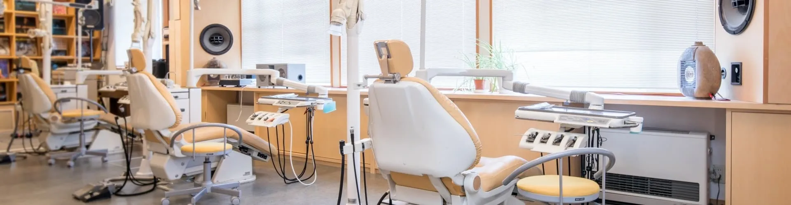
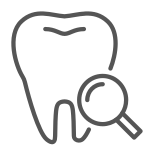
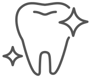
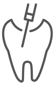
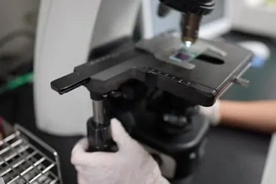
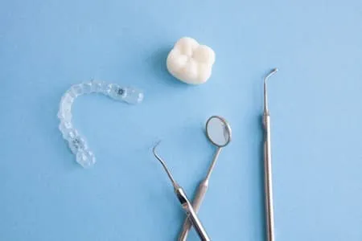

診療時間
| 時間 | 月 | 火 | 水 | 木 | 金 | 土 | 日祝 |
|---|---|---|---|---|---|---|---|
| 10〜13時 | ○ | ○ | ○ | ○ | ○ | ○ | × |
| 14〜19時 | ○ | ○ | ○ | ○ | ○ | ○ | × |
※最終受付 18:30 ／ 日曜・祝日 休診
MEDICAL SERVICES
診療内容
一般歯科・小児歯科・矯正歯科それぞれの専門医師が在籍し、
幅広い総合的な診療が可能です。

虫歯・歯周病治療 / メンテナンス
早期発見・早期治療でお口の健康を守ります。定期検診・クリーニングも承ります。

審美治療 / ホワイトニング
セラミック・ジルコニアなど高品質素材で美しい歯を実現します。
親知らず抜歯
痛みへの配慮を最優先に、安全で迅速な抜歯治療を行います。
インプラント
自分の歯のような自然な噛み心地を取り戻すインプラント治療。
小児歯科
お子様の成長に合わせた歯科治療とフッ素塗布で将来の歯を守ります。
矯正歯科
マウスピース矯正（インビザライン）から本格的なワイヤー矯正まで対応。
入れ歯 / ブリッジ治療
機能性と審美性を両立した入れ歯・ブリッジをご提案します。

根管治療
歯を残すための精密な根管治療。マイクロスコープを使用した高精度な処置。
FEATURES
当院の特徴
丁寧な初診カウンセリング
患者様のお悩みをじっくりお伺いし、治療内容・費用を分かりやすくご説明してから治療を開始します。
24時間WEB予約・便利なアクセス
いつでも予約できるWEB予約システムと、クレジットカード・電子マネー決済に対応しています。
安心の医療ホワイトニング
歯科医師・歯科衛生士が最適なホワイトニングをご提供。歯への負担を抑えた確かな効果。
痛みのない優しい治療
お子様から歯科が苦手な方まで、安心して受診いただけるよう痛みの少ない治療を心がけています。

高品質の医療環境を整備
幅広い症例に対応する最新の診療設備を整えています。デジタルレントゲン・口腔内スキャナーを導入。

徹底された感染症対策
EU基準に適合した最新の滅菌機器を導入。安心して治療いただける環境を整えています。
GREETING
ごあいさつ
院長より
患者様のお口の健康を、
生涯サポートします。
はじめまして。東都中央歯科医院院長の沢村 悠人です。大学病院や総合病院、地域密着型のクリニックで、一般歯科から審美歯科・インプラント治療まで幅広い経験を積んでまいりました。患者様一人ひとりに寄り添い、丁寧な説明と質の高い治療を提供することを何よりも大切にしています。
当院では、お子様からご高齢の方まで、皆様が生涯にわたりご自身の歯で美味しく食事をし、心から笑顔で毎日を送れるよう全力でサポートさせていただきます。どんな些細なことでもお気軽にご相談ください。
院長 歯科医師 沢村 悠人 Yuto Sawamura, D.D.S.
ACCESS
診療時間・アクセス
診療時間
| 診療時間 | 月 | 火 | 水 | 木 | 金 | 土 | 日・祝 |
|---|---|---|---|---|---|---|---|
| 10:00〜13:00 | ○ | ○ | ○ | ○ | ○ | ○ | × |
| 14:00〜19:00 | ○ | ○ | ○ | ○ | ○ | ○ | × |
※最終受付 18:30まで ※日曜・祝日は休診
- 住所
- 〒108-0014 東京都港区芝5丁目XX番XX号
- アクセス
- JR山手線 田町駅 西口より徒歩3分
- 電話番号
- 03-1234-5678